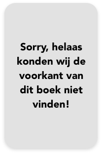

samenvatting
Wanneer uitgever en privé-detective Geronimo Stilton (ik-figuur) een assistente aanneemt, verandert zijn leven volkomen.
Wanneer uitgever en privé-detective Geronimo Stilton (ik-figuur) een assistente aanneemt, verandert zijn leven volkomen.